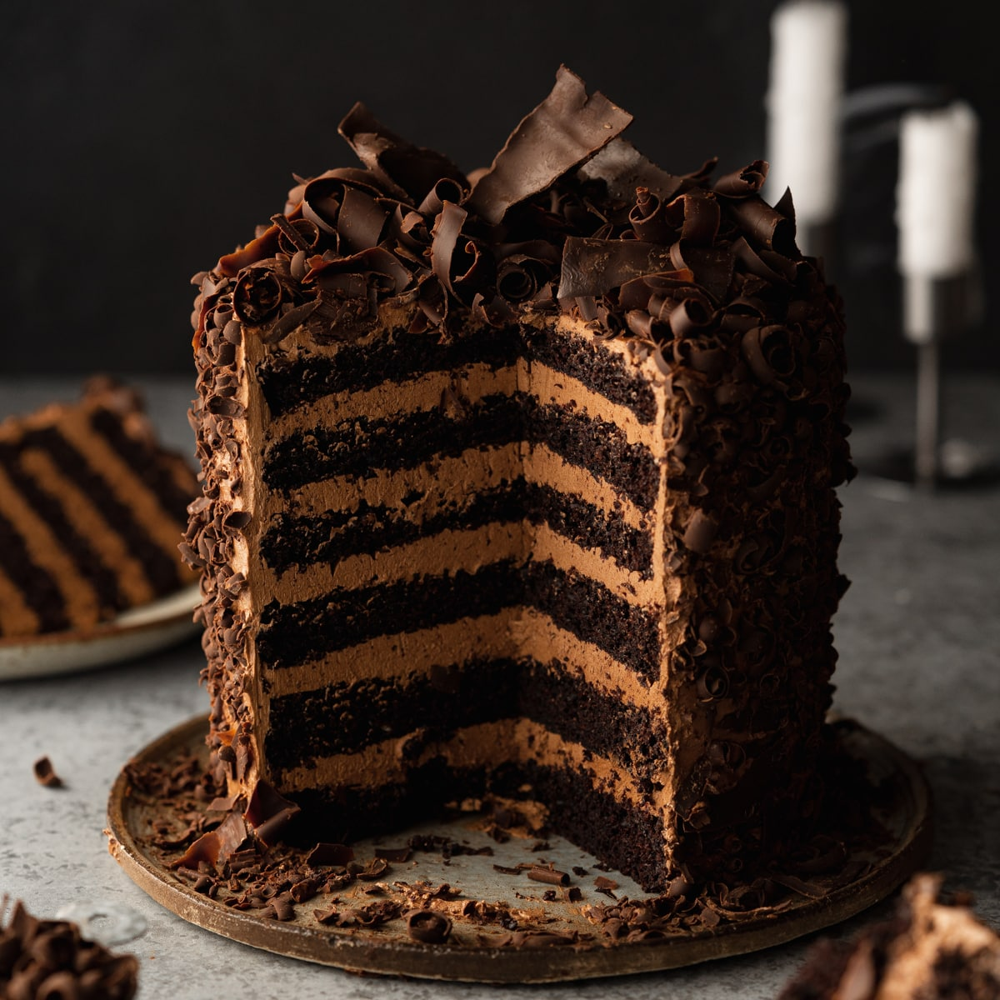

Devil's Food Cake

This rich, moist, and chocolatey cake is every
chocoholic's dream. it's deep flavour and fluffy texture make it the
perfect dessert for your cravings, birthdays, and special occasions
Recipe Details
Prep time: 15 minutes
Cook time: 30 minutes
Total time: 30 minutes
Servings: 24
Yield: 1 2-layer 9-inch cake
Difficulty: Intermediate
Ingredients
- ½ cup butter
- 3 (1 ounce) squares unsweetened chocolate
- 2 cups white sugar
- 2 eggs
- 1 cup water
- 2 ¼ cups all-purpose flour
- 1 ½ teaspoons baking soda
- ¼ teaspoon salt
- ¼ cup milk
- 1 teaspoon distilled white vinegar
Directions
-
Preheat the oven to 350 degrees F (175 degrees C). Lightly grease and
flour two 9-inch round pans or one 9x13-inch pan.
-
In a small pan, melt butter or margarine with unsweetened chocolate.
Set aside to cool slightly.
-
Cream together sugar and eggs until light in color. Add chocolate
mixture to eggs and temper mixture by beating well.
Add 1 cup boiled water (still warm) and blend well. Mixture will be
very liquid.
-
Mix together flour, baking soda, and salt. Add this mixture to
chocolate mixture and blend well.
-
Mix together vinegar and the milk and stir into chocolate batter. Pour
into the prepared pans.
-
Bake in the preheated oven until a toothpick inserted in the center
comes out clean, about 30 minutes.
Tips
This cake is delicious layered with mousse, chocolate ganache, or Black
Forest fillings.